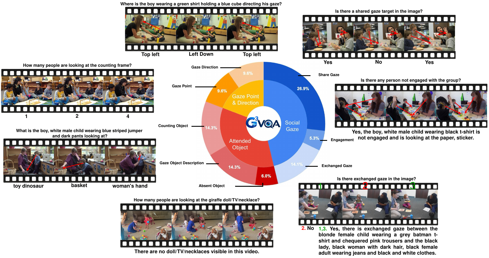

Swipe sideways to see the whole figure.
About
G3VQA is a manually annotated video benchmark for social and temporal gaze reasoning. It asks who is looking, what they look at, how attention is shared between people, and how all of this changes over time. The benchmark covers 381 video clips from ChildPlay, with around 900K frame level questions and around 30K temporal questions about whole videos. Humans produced and checked every appearance, gaze and social attention label.
Loading the videos…